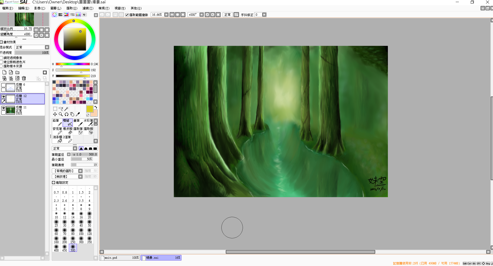
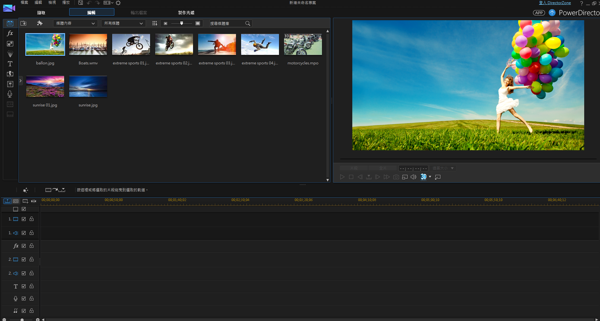
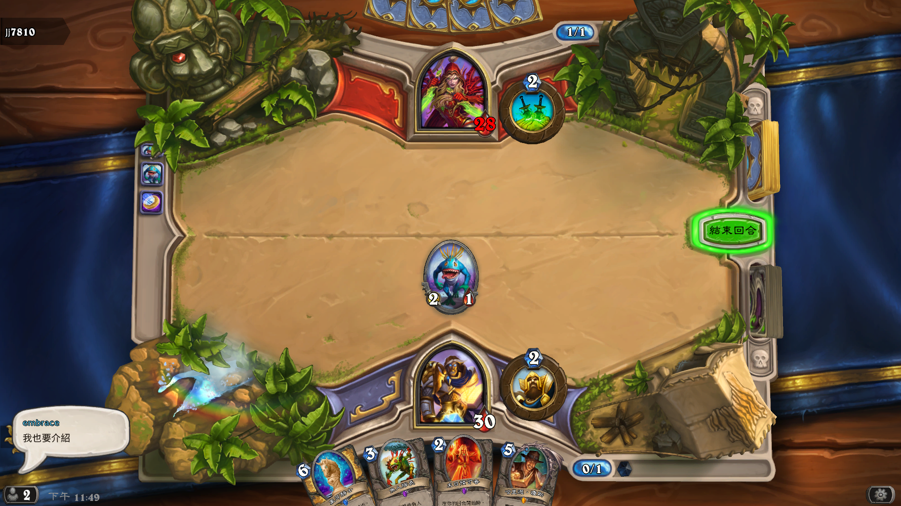
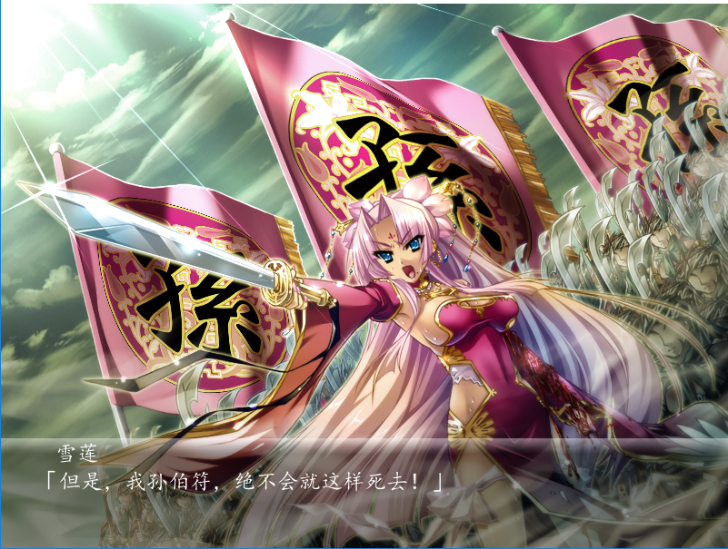

My perfect Application&Game
軟體介紹

SAI
SAI是一款繪圖軟體，比起其他繪圖軟體ex:ps,painter的功能性還要少，但因為這樣讓初學者或是其他人比較好上手，軟
體的介面也容易了解，不過即使功能比較少一點，但必要性的圖層、筆刷等等的功能都有具備，也可以畫出美美的圖。

威力導演
威力導演是一個剪輯的軟體，能處理很多日常中的小影片，功能也蠻清楚的，介面也讓人容易了解，可以很容易的去編輯
字幕、剪輯音軌甚至是放入更多的特殊音效或是場景，自己也可以做出美美的影片。
遊戲介紹

爐石戰記
這是一款類似卡牌遊戲的手遊也可以直接連結在電腦上玩，這遊戲有許多職業，而每一職業的卡牌都不一樣，而玩家
要透過手上的卡牌打出怪物與法術，並且打敗30滴血的敵人玩家。

戀姬無雙
這是一部以三國為背景的劇情攻略遊戲，然而三國的武將都變成了女生，而男主角透過選擇到不同的國家，而產生了許多故事
，延生出來的劇情與原本三國的歷史不同，男主角與不同的女主角武將的結局也不同，這部遊戲會讓你推翻對三國人物原本的刻板印象，然後沉迷於劇情裡